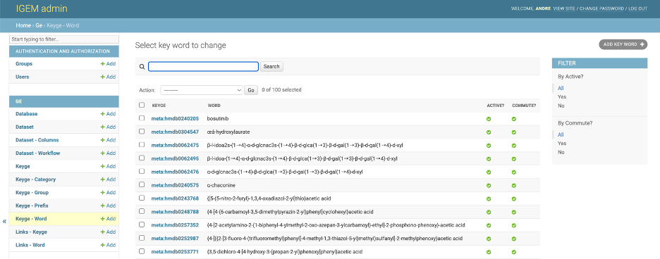
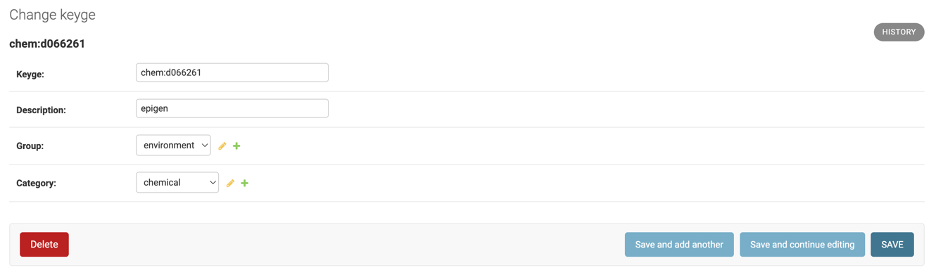
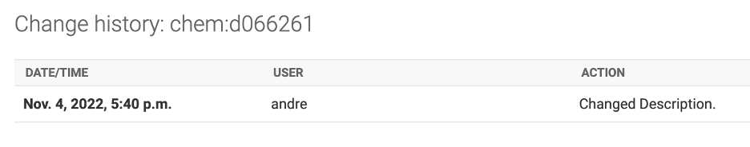
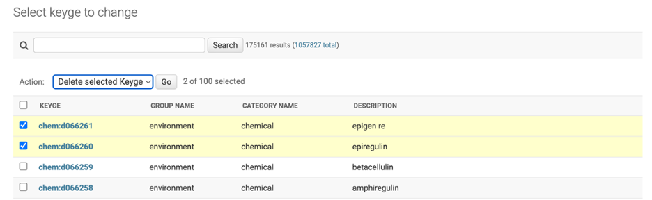

Keyword¶
- The KEYWORD data will be stored in the ge_KEYWORD table of the IGEM DB defined in the initial parameters. The available fields are:
word: The word or set of words that convert to KEYGE (unique)
keyge_id: foreign_key to ge_keyge that link word with one keyge
commute: Flag used to convert. If it is the same criterion between KEYGE and WORD, disable this flag to reduce memory consumption during the ETL process.
status: Flag to activate the relationship
The inclusion of new data can be performed via the process db . On the command line:
$ python manage.py db --load KEYWORD --path {path/filename}.csv
Example of the load file can be found in the folder src/load/md/keyword.csv
To list the KEYWORD already registered, type the command line:
$ python manage.py db --show keyword
To download the KEYWORD already registered, type the command line:
$ python manage.py db --download keyword --path {path/filename}.csv
To delete a specific KEYWORD, type the command line:
$ python manage.py db --delete keyword --keyge(or word) {keyge or word}
To delete all KEYWORD Table. type the command line:
$ python manage.py db --truncate keyword
KEYWORD Web Interface¶
Through IGEM’s friendly web interface, it will be possible to carry out KEYWORD management activities.
Activate the IGEM web service if you have not already done so. Go to the /src/ folder and type the command line:
$ python manage.py runserver

If it returns a port error, you can specify a different port:
$ python manage.py runserver 8080
Access the address in the link provided in Starting development server. Significantly, this address may vary depending on the initial settings performed during installation.
After user authentication and on the initial administration screen, select an option Database.

On the Database screen, we will have options to consult, modify, add and eliminate KEYWORD.
On the first screen, we have a view of all available KEYWORD. To consult, click a desired KEYWORD.
- On the next screen, we have all the KEYWORD fields open for modifications. To modify, change the desired information and select one of the three button options:
Save and add another: Will save the changes and open a blank KEYWORD screen to add a new KEYWORD record.Save and Continue editing: Will save the changes and continue on the KEYWORD screen.Save: Will save the changes and return to the screen with the list of KEYWORD.
In the History button, we can consult all the modifications carried out in the KEYWORD, this function will be important to track modifications and audit the process.
The DELETE button will permanently delete the KEYWORD record.
Caution: when deleting a KEYWORD, the system will also delete all records dependent on that KEYWORD, which include KEYWORDs, and KEYLINKs
Deletion can also be performed en bloc. On the KEYWORD List screen, select all the KEYWORD you want to delete, choose the Delete Selected KEYWORD action and click on the GO button.
Be careful, this elimination operation will be definitive for the KEYWORD and for all other records dependent on it, as already explained.
- To add new KEYWORD, we will have three different ways:
by the
+ Addbutton on the left sidebar.Through the
ADD KEYWORD +button in the right field of the KEYWORD list.Via the
Save and add anotherbutton located within a KEYWORD record.
- For the KEYWORD, we will have two filter locations:
First located at the top of the KEYWORD List screen where we can search broadly.
Second on the right sidebar, being able to select by Actives status and Commute status.